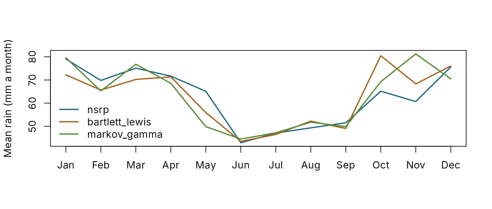
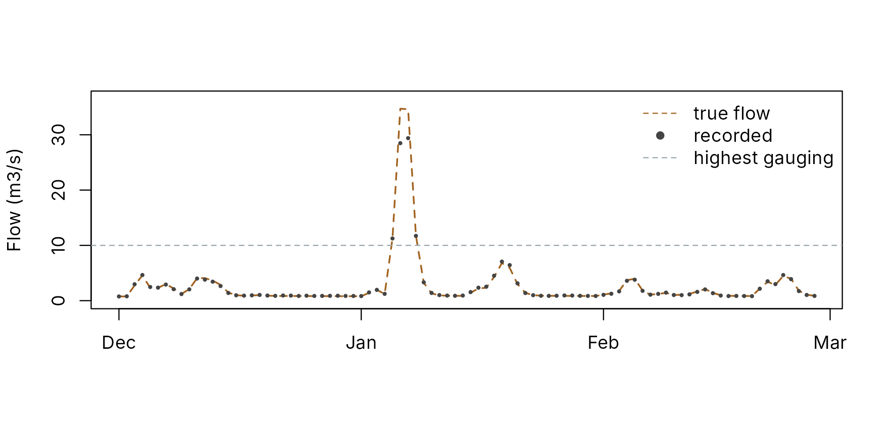

Synthetic rivers: try everything on a known answer
pdmS7 documentation
Source:vignettes/synthetic-rivers.Rmd
synthetic-rivers.RmdA synthetic river is a calibration problem whose answer is known. Rain from a stochastic generator drives a PDM with chosen parameters, and a simulated gauge records the flow with the faults real gauges have. Calibrate to it and you can see, parameter by parameter, what a method recovers and what it cannot. It needs no data, so it is also the quickest way to try the whole package.
Two functions do the work:
-
synthetic_rain()generates rain and potential evaporation at any step from 15 minutes to a day, by one of four methods, from built-in parameters or parameters fitted to a real gauge. -
synthetic_catchment()drives the PDM with that rain and adds storms, gauge error and an extrapolated rating.
Rain
Four generators
| Method | How it makes rain | Steps | Best for |
|---|---|---|---|
nsrp (default) |
Neyman-Scott rectangular pulses: storms arrive at random, each spawning rain cells with their own delay, duration and intensity | Any | Sub-daily rain with realistic storms |
bartlett_lewis |
Bartlett-Lewis rectangular pulses: a storm produces cells at a steady rate until it stops | Any | The same, by the other classic model |
markov_gamma |
Wet and dry days from a Markov chain, amounts from a gamma distribution | Daily | Simple daily rain |
resample |
Blocks of whole days drawn from a real record, from the same time of year | The record’s | Rain exactly like the gauge’s, in a new order |
All four change with the seasons: their parameters are set month by month. The built-in parameters are illustrative, chosen to resemble lowland England (about 760 mm a year, gentle frontal rain in winter, short intense storms in summer), and fitted to no particular site. All three parametric generators describe the same climate.
gen <- function(method, dt) {
synthetic_rain("2000-10-01", years = 30, dt = dt, method = method, seed = 1)
}
daily <- list(nsrp = gen("nsrp", 24), bartlett_lewis = gen("bartlett_lewis", 24),
markov_gamma = gen("markov_gamma", 24))
summary_of <- function(r) {
wet <- r$rain > 0.1
c(mm_per_year = sum(r$rain) / 30, wet_days = mean(wet), mean_wet_day_mm = mean(r$rain[wet]),
wettest_day_mm = max(r$rain))
}
round(sapply(daily, summary_of), 2)
#> nsrp bartlett_lewis markov_gamma
#> mm_per_year 753.01 751.46 754.44
#> wet_days 0.36 0.35 0.35
#> mean_wet_day_mm 5.72 5.83 5.89
#> wettest_day_mm 92.43 91.34 44.33The three agree on the totals and the share of wet days. They differ in the extremes, which is where the models differ most: the pulse models build heavy days from overlapping cells, the Markov chain from the tail of one gamma distribution.
monthly <- sapply(daily, function(r) tapply(r$rain, as.POSIXlt(r$time)$mon, sum) / 30)
matplot(1:12, monthly, type = "l", lty = 1, lwd = 2, col = pal[2:4], xaxt = "n",
xlab = "", ylab = "Mean rain (mm a month)")
axis(1, 1:12, month.abb)
legend("bottomleft", colnames(monthly), col = pal[2:4], lwd = 2, bty = "n")
Statistics the pulse models reproduce exactly
For the two pulse models, the mean, variance, lag-1 autocorrelation
and proportion of dry intervals have exact formulas at any interval
length. rain_statistics() computes them, and for a record
it computes the same statistics from the data. The model’s figures and
those of a 30-year simulation agree to within the scatter of a 30-year
sample:
hourly <- synthetic_rain("2000-10-01", years = 30, dt = 1, seed = 2, pet = NULL)
model <- rain_statistics(rain_parameters("nsrp"), hours = c(1, 24))
data <- rain_statistics(hourly, hours = c(1, 24))
january <- rbind(model = model[model$month == 1, -1], simulated = data[data$month == 1, -1])
round(january[order(january$hours), ], 3)
#> hours mean variance lag1 pdry
#> model.1 1 0.096 0.145 0.721 0.851
#> simulated.1 1 0.092 0.138 0.706 0.858
#> model.2 24 2.304 18.178 0.154 0.450
#> simulated.13 24 2.212 17.415 0.192 0.484Fitting to a real gauge
fit_rain() fits any of the three parametric generators
to a record, month by month. The pulse models are fitted by matching
those statistics at 1 and 24 hours (24 and 72 hours for a daily record);
the Markov chain by maximum likelihood. A record read with reach.io can
be passed straight in:
gauge <- reach.io::read_silver("data/hydrometric", "SS92F014", "P", start = "1995-01-01")
parameters <- fit_rain(gauge, "nsrp")
rain <- synthetic_rain("2030-10-01", years = 50, parameters = parameters)
# Or keep the gauge's own rain, in a new order:
rain <- synthetic_rain("2030-10-01", years = 50, method = "resample", record = gauge)Without a real gauge to hand, the hourly series above stands in for one. Fitting the Neyman-Scott model to it recovers its statistics:
fitted <- fit_rain(hourly, "nsrp")
check <- attr(fitted, "fit")
round(check[check$month %in% c(1, 7), c("month", "hours", "variance_record", "variance_model",
"pdry_record", "pdry_model")], 3)
#> month hours variance_record variance_model pdry_record pdry_model
#> 1 1 1 0.138 0.138 0.858 0.854
#> 2 1 24 17.415 17.453 0.484 0.483
#> 19 7 1 0.354 0.350 0.960 0.961
#> 20 7 24 22.546 22.905 0.748 0.744Across all twelve months, the fitted variances are within 2 per cent of the record’s and the dry proportions within 0.01. The parameters themselves are less well determined than the statistics: several combinations of storm rate, cells per storm and cell size give much the same rain. That is a property of the model, not of the fit, and it does no harm when the aim is realistic rain.
The river
synthetic_catchment() takes the rain (generating it if
none is given), adds any storms you name, runs a PDM, and records the
flow through a simulated gauge.
river <- synthetic_catchment(
years = 10, dt = 24, area_km2 = 60, seed = 4,
storms = data.frame(time = "2016-01-05", depth_mm = 150, duration_h = 48),
error = list(sd = 0.05, memory_h = 72),
highest_gauged_m3s = 10
)
river
#> Synthetic catchment: 3650 steps of 24 h from 2010-10-01T00:00:00Z
#> Rain: nsrp - 777 mm a year; 1 added storm
#> True flow: mean 0.906 m3/s, peak 34.7 m3/s
#> Gauge error: sd 0.05 in logs, memory 72 h
#> Rating: exact to 10 m3/s, then 15 per cent low at twice that; 4 steps above| Part | What it does |
|---|---|
| True model | The standard structure with a lowland water balance: soil capacity
up to 300 mm, slow drainage to groundwater above a 50 mm threshold,
surface stores of 12 hours. Every calibrated parameter lies inside
calibration_bounds(), so a calibration can in principle
recover it. Pass truth to use any configuration |
| Start | Spun up over the first year, so the record starts in balance |
| Storms | Each adds a depth over a duration, in a triangular profile. They guarantee floods larger than ten years of generated rain would give |
| Gauge error | Multiplicative and persistent: an AR(1) process in logs, here with a 5 per cent standard deviation and a three-day memory. Real gauge errors drift; they do not flicker |
| Rating | Exact up to the highest gauged flow, then bent low, as an extrapolated rating often is |
rows <- which(river$forcing$time >= as.POSIXct("2015-12-01", tz = "UTC"))[1:90]
time <- river$forcing$time[rows]
plot(time, river$true_flow[rows], type = "l", col = pal[3], lwd = 1.5, lty = 2, xlab = "",
ylab = "Flow (m3/s)", ylim = c(0, max(river$true_flow[rows]) * 1.05))
points(time, river$observed[rows], pch = 16, cex = 0.5, col = pal[1])
abline(h = river$highest_gauged_m3s, lty = 2, col = pal[7])
legend("topright", c("true flow", "recorded", "highest gauging"), col = pal[c(3, 1, 7)],
lty = c(2, NA, 2), pch = c(NA, 16, NA), bty = "n")
At the storm’s peak the gauge records 28 m3/s against a true 35: 18 per cent low, mostly from the rating.
Calibrating to it
The river drops straight into the rest of the package. Here, the standard preset is calibrated to the first six years and checked on the rest:
start <- pdm_presets("standard")
start$dt <- 24
start$area_km2 <- 60
bounds <- calibration_bounds(start)
f <- river$forcing
cal <- f$time < as.POSIXct("2016-10-01", tz = "UTC")
fit <- calibrate_pdm(start, f[cal, ], river$observed[cal],
lower = setNames(bounds$lower, bounds$path),
upper = setNames(bounds$upper, bounds$path),
log_scale = bounds$path[bounds$scale == "log"], warmup = 90,
objective = "nse", starts = 3, seed = 1, control = list(maxit = 40))
compare <- data.frame(
truth = sapply(bounds$path, function(p) pdmS7:::.path_get(river$truth, p)),
calibrated = signif(fit$parameters, 3)
)
compare
#> truth calibrated
#> fc 1.0 9.66e-01
#> distribution.cmax 300.0 3.29e+02
#> distribution.b 0.4 6.30e-01
#> recharge.kg 4000.0 3.61e+03
#> surface.k1 12.0 7.28e+00
#> surface.k2 12.0 1.83e+01
#> groundwater.kb 10000.0 1.44e+05
model <- pdm_from_config(fit$config)
sim <- run_pdm(model, f[c("rain", "pet")],
initial_state_from_flow(model, river$observed[1], 0.7))$output$q_m3s
later <- !cal
c(nse_against_recorded = pdm_scorecard(sim[later], river$observed[later])[["nse"]],
nse_against_truth = pdm_scorecard(sim[later], river$true_flow[later])[["nse"]])
#> nse_against_recorded nse_against_truth
#> 0.9900075 0.9965656The calibrated parameters are not the true ones: kb is
14 times too large, and the two surface stores, both 12 hours in truth,
come out at 7 and 18 hours. Yet the fit scores 1.00 against the truth.
Many parameter sets fit a record almost equally well; Larger floods shows where that
matters.
Only on a synthetic river can the last line be computed: the score against the truth, rather than against a gauge that has its own errors.
What else to try
| Question | How |
|---|---|
| What does structural error do? | Pass a different truth, such as a split recharge or an
exponential store from structure_set(), and calibrate the
standard structure to it |
| Does a calibration extrapolate? | Register the river in a calibration project; the wettest years are held back and tested. See Larger floods |
| How do forecasts degrade with lead time? | Use the river in a hindcast with pdm_hindcast(). See Hindcasts
|
| What does a 15-minute record change? |
synthetic_rain(dt = 0.25) and a truth with
dt = 0.25
|
| How much do gauge errors matter? | Vary error, highest_gauged_m3s and
rating_bias, and compare the scores against the truth |
Limits
A synthetic river flatters every method run on it. The true model is a PDM, the rain is known exactly, and the gauge’s errors follow a simple rule. Use it to understand methods and to test code, not to predict how well a calibration will do on a real catchment.
References
Cowpertwait, P.S.P. (1996) Further developments of the Neyman-Scott clustered point process for modeling rainfall. Water Resources Research 32(7), 2155-2164.
Richardson, C.W. (1981) Stochastic simulation of daily precipitation, temperature, and solar radiation. Water Resources Research 17(1), 182-190.
Rodriguez-Iturbe, I., Cox, D.R. and Isham, V. (1987) Some models for rainfall based on stochastic point processes. Proceedings of the Royal Society of London A 410, 269-288.